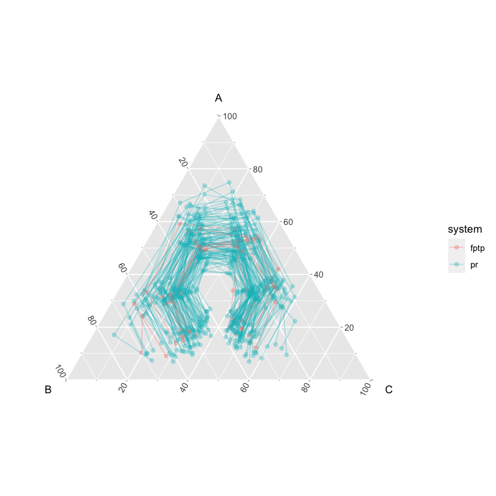
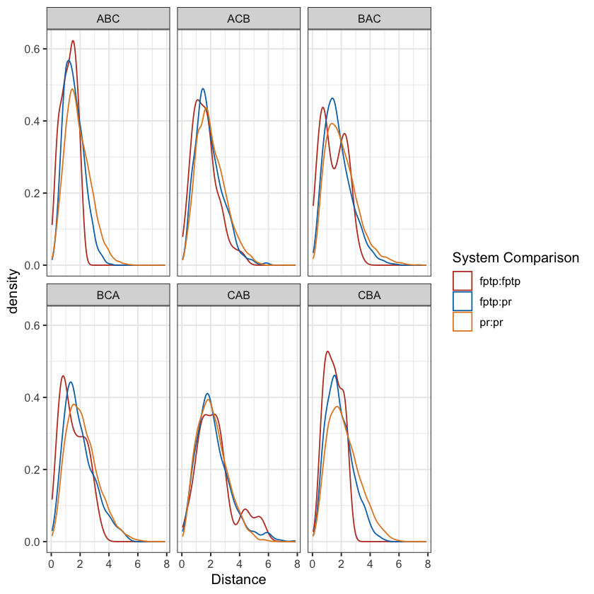
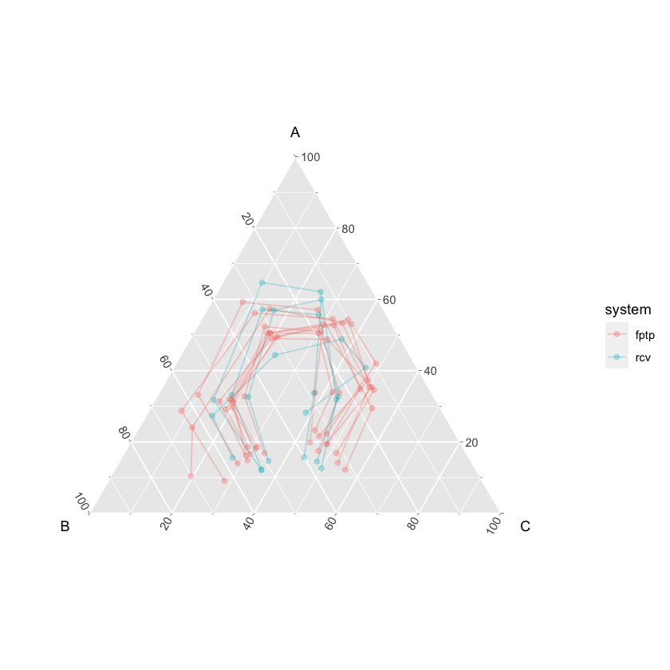
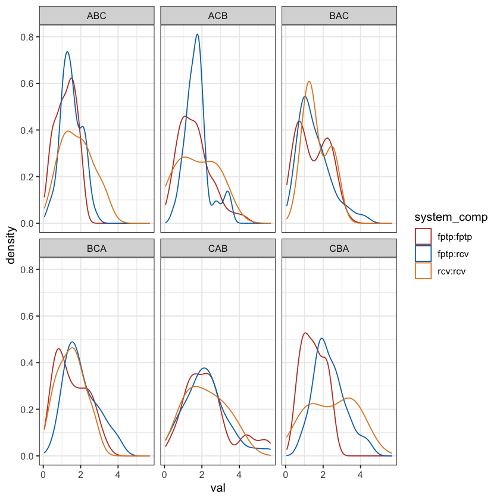

#' Function to return distance dataframe conditional on voter type
#' data should include 'case' and 'type' along with utils
return_distdf <- function(
data, type, name_vec, case_supplied = FALSE){
abc_type <- data[data[["type"]] == type, ]
if (case_supplied){
name_vec <- abc_type[["case"]]
}
abc_dist <- rdist(
abc_type[, c("A", "B", "C")],
abc_type[, c("A", "B", "C")])
rownames(abc_dist) <- name_vec
colnames(abc_dist) <- name_vec
ind <- which(upper.tri(abc_dist, diag = TRUE), arr.ind = TRUE)
nn <- dimnames(abc_dist)
dist_mat <- data.frame(row = nn[[1]][ind[, 1]],
col = nn[[2]][ind[, 2]],
val = abc_dist[ind])
dist_mat_ext <- dist_mat |>
left_join(systems, by = c("row" = "case")) |>
mutate(system_left = system) |>
dplyr::select(row, col, val, system_left) |>
left_join(systems, by = c("col" = "case")) |>
mutate(system_right = system) |>
dplyr::select(row, col, val, system_left, system_right) |>
mutate(
system_comp = paste0(system_left, ":", system_right),
type = type
) |>
filter(row != col)
return(dist_mat_ext)
}Measuring Distance Between Utility Profiles
Calculating distances between pairs of cases conditional on voter type
Every case’s preference profile is described by a \(\mathbf{U}\) matrix with dimensions \(n \times k\).
- Generate `average voter’ for each voter type (\(ABC\)) and case \(j\), e.g.
\[ \bar{\mathbf{u}}_{j, \ ABC} = \frac{\sum^{n}_{i = 1, \ i \in ABC} \mathbf{u}_{ij}}{n} \]
- Create a Euclidian distance matrix for all possible combinations of average voter vectors for the same voter type:
\[ \mathbf{D}_{ABC} \]
where the Euclidean distance between two cases’ (\(p\) and \(q\)) average ABC profiles is stored in cell \(pq\): \[ D_{ABC, \ pq} = \sqrt{\sum (\bar{\mathbf{u}}_{p, \ ABC} - \bar{\mathbf{u}}_{q, \ ABC})^2} \]
- Finally, take the upper triangular matrix of \(\mathbf{D}_{ABC}\) and convert into a data frame.
# Put all utils into one DF
all_utils <- map_dfr(
big_list_na_omit,
~ .x$U,
.id = "case"
)
# Identify voter types and label utils data
prefmat <- sincere_pref_mat_from_U(all_utils[, 2:4])
pref_string <- apply(prefmat, 1, function(x) paste0(x[1], x[2], x[3]))
pref_string[pref_string == "123"] <- "CBA"
pref_string[pref_string == "132"] <- "BCA"
pref_string[pref_string == "213"] <- "CAB"
pref_string[pref_string == "312"] <- "ACB"
pref_string[pref_string == "321"] <- "ABC"
pref_string[pref_string == "231"] <- "BAC"
all_utils$type <- pref_string
all_utils$type <- fct_relevel(all_utils$type, c(
"BCA", "BAC", "ABC", "ACB", "CAB", "CBA"))
# Compute the average profile by case and type
summary_df <- all_utils |>
group_by(case, type) |>
summarise(A = mean(A), B = mean(B), C = mean(C)) |>
left_join(systems) |>
arrange(case, type)[1m[22m`summarise()` has grouped output by 'case'. You can override using the
`.groups` argument.
[1m[22mJoining, by = "case"Comparison between FPTP and PR
# Subset to plurality and PR only
summary_pr <- summary_df |>
filter(system %in% c("fptp", "pr")) |>
arrange(system, case, type)
# Plot the average preference profiles (by system)
ggtern(summary_pr, aes(B, A, C)) +
geom_path(aes(colour = system, group = case), alpha = 0.3) +
geom_point(aes(colour = system), alpha = 0.3)
# Calculate distance between cases (by same voter type)
out_map_pr <- map_dfr(
c("BCA", "BAC", "ABC", "ACB", "CAB", "CBA"),
~ return_distdf(summary_pr, type = .x, case_supplied = TRUE)
)
# The distance between average voter profiles isn't that different between FPTP and PR!
ggplot(out_map_pr, aes(x = val)) +
geom_density(aes(colour = system_comp)) +
facet_wrap(~ type) +
theme_bw() +
labs(colour = "System Comparison", x = "Distance") +
scale_colour_nejm()

Comparison between FPTP and RCV
# Subset to plurality and RCV only
summary_rcv <- summary_df |>
filter(system %in% c("fptp", "rcv")) |>
arrange(system, case, type)
# Plot the average preference profiles (by system)
ggtern(summary_rcv, aes(B, A, C)) +
geom_path(aes(colour = system, group = case), alpha = 0.3) +
geom_point(aes(colour = system), alpha = 0.3)
# Calculate distance between cases (by same voter type)
out_map_rcv <- map_dfr(
c("BCA", "BAC", "ABC", "ACB", "CAB", "CBA"),
~ return_distdf(summary_rcv, type = .x, case_supplied = TRUE)
)
# The distance between average voter profiles isn't that different between FPTP and RCV!
ggplot(out_map_pr, aes(x = val)) +
geom_density(aes(colour = system_comp)) +
facet_wrap(~ type) +
theme_bw() +
labs(colour = "System Comparison", x = "Distance") +
scale_colour_nejm()
